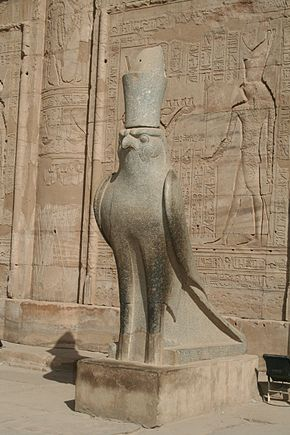

Horus ("el elevado") era el dios celeste en la mitología egipcia. Se le consideraba como el iniciador de la civilización egipcia. Era el dios de la guerra. Su nombre egipcio era Hor (Ḥr); Horus es su nombre helenizado (Ώρος). La deidad griega asociada fue Apolo Febo. Era el hijo de Isis y Osiris.
Según la mitología heliopolitana (Heliópolis), Geb (la tierra de Egipto) y su esposa y hermana Nut (el cielo), dan vida a dos varones, Osiris y Seth y a dos mujeres: Isis y Neftis. Osiris se casa con Isis, y Seth con Neftis. La leyenda da cuenta de los innumerables enfrentamientos entre Osiris y su hermano Seth. Gracias a un engaño, Seth logra asesinar a Osiris, lo descuartiza en 14 partes y oculta sus restos para evitar que encuentren su cuerpo, desperdigándolos por todo Egipto. Su mujer, Isis, enterada de lo sucedido, busca cada pedazo, día y noche, por todos los rincones de Egipto. Finalmente, Isis logra recuperar todos los restos de su difunto marido Osiris, excepto el falo. Isis utilizó sus poderes divinos para resucitar a su marido Osiris, que a partir de entonces se encargaría de gobernar en el país de los muertos, la Duat.
